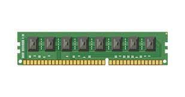

La RAM (siglas, en ingles, de memoria de acceso aleatorio) permite acceder rapidamente a los datos del ordenador y guardarlos temporalmente. La RAM se situa entre el procesador y el almacenamiento permanente de los datos, como las unidades HDD/SSD.
